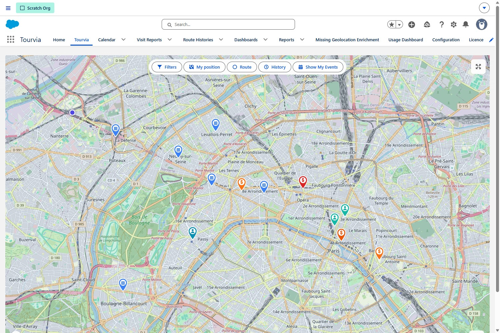
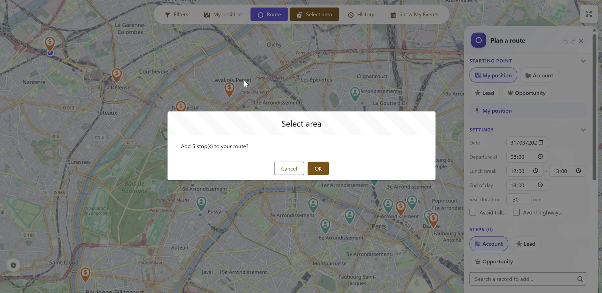
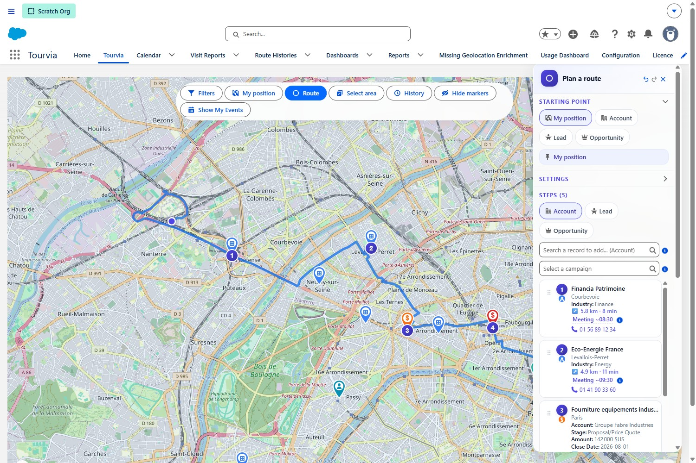
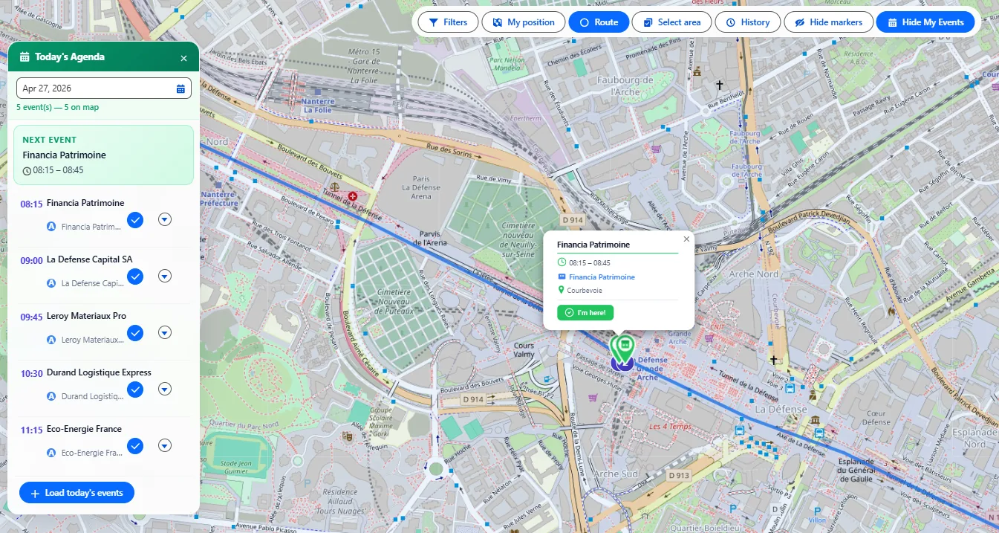
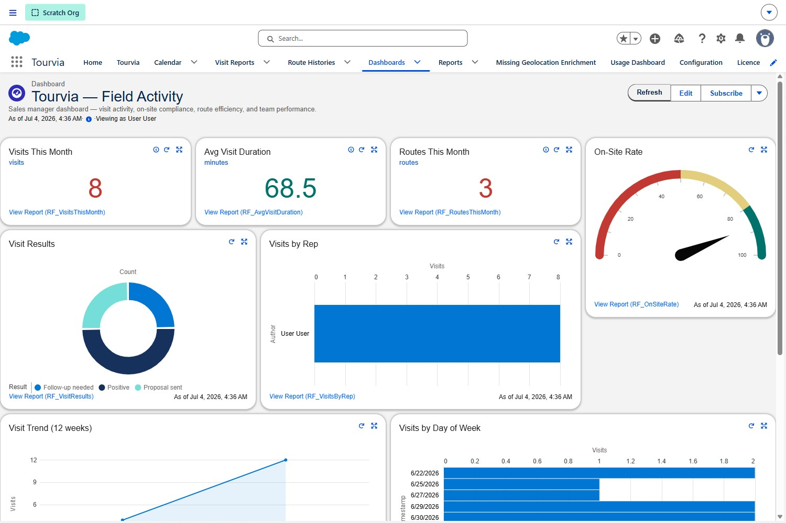

01 · Territory filters
Saved filters, object toggles & heatmap
Filter Accounts, Opportunities, Leads and Campaign Members on standard or custom Salesforce fields.
00 / 05 Scattered day
Your Accounts, Leads, Opportunities and Campaign Members arrive scattered across the territory. Scroll to watch Tourvia isolate five visits, order the day, create every timed Event and close the loop in the field.

01 / 05 Territory selection
Start with records already geocoded in Salesforce. Filter on your own CRM fields, then draw an area across the territory to add every matching stop to the route in one action.
One route covers one day for one user · no CSV export.

02 / 05 Route optimization
Backtracking collapses into a five-stop sequence. Tourvia calculates the order around departure time, lunch break, visit duration, end of day, and toll or highway preferences. Change a setting and the schedule recalculates.
Illustrative route from Tourvia’s Paris test org, not a promised customer result.

03 / 05 Calendar creation
Step 01 · Conflict check
Real Schedule Conflicts check followed by Today’s Agenda (5 events) inside Lightning.

04 / 05 Field execution
Step 01 · On-site check-in
In the Salesforce Mobile App, the rep opens today’s agenda and hands off turn-by-turn navigation to Google Maps, Waze or Apple Maps.
The proximity result depends on device accuracy, geocoding quality and the configured radius. It does not prove identity or physical presence.
05 / 05 Completed day
All five visits on the Paris route are closed: timed Events updated, structured Visit Reports linked to CRM records, the route saved in Route History, and native Salesforce dashboards refreshed.

Inside Salesforce
Tourvia is a managed package that reads and writes your Salesforce records directly under your org’s sharing rules and field-level security. For a route calculation, only coordinates and time constraints leave the org to compute the sequence in memory.
Accounts, Leads, Opportunities, Campaign Members, Events, Visit Reports, names, postal addresses, phone numbers and emails stay in Salesforce.
Hosted by OVHcloud in Gravelines, France. Calculates the ordered route in memory; coordinates are not stored.
No separate CRM sync layer or external field database is introduced. Admins place the Tourvia component through Lightning App Builder on Account, Lead, Opportunity and Campaign record pages, app pages, home pages, tabs, the utility bar, Experience Cloud and Salesforce Mobile. Behavioral configuration lives in Custom Metadata Types.
Proof and price
One public per-user rate at every team size, billed monthly through AppExchange Checkout, with route optimization included and no routing API pass-through fees.
One public rate
Every feature is included in both the 30-day trial and the monthly subscription. No free plan and no custom-quote threshold. Install directly from the public AppExchange listing with Get It Now.
30-day complete trial · Get It Now on AppExchangePassed 22 May 2026. The current TourviaApp 7.36.0 build ships on the approved managed package lineage. Salesforce does not endorse or recommend Tourvia.
Real product screens
Unedited captures from Tourvia’s Paris test org inside Salesforce Lightning. Select any plate to inspect it at full resolution.
The package, in detail
Every capability below is included in the €30 excl. tax / user / month subscription and in the complete 30-day trial.
Surfaces. Record pages, app pages, tabs, the utility bar, Campaign pages, Experience Cloud and Salesforce Mobile. Configuration lives in Custom Metadata Types. RouteForce still appears in some technical names.
Full route-planning workflowQuestions
Installation, pricing, data processing and mobile execution, aligned directly with the product documentation.
Tourvia is a Salesforce managed package for route planning, route optimization, visit planning and field execution. It is the current name of RouteForce, with the same package and workflow.
Field sales teams that work in Salesforce and want routes, Events, visits and reports tied to their CRM records instead of exported to a separate routing app.
Yes, on a public listing. TourviaApp passed the Salesforce Security Review on 22 May 2026 and the current 7.36.0 build is on the same approved lineage. Your Salesforce admin installs the 30-day trial with Get It Now. Salesforce does not endorse or recommend Tourvia.
€30 excluding tax per licensed user per month, billed monthly through AppExchange Checkout (equivalent to €360 excl. tax per user over 12 months). The same monthly rate applies at every team size and there is no free plan. See the pricing page.
Salesforce remains the system of record for Accounts, Leads, Opportunities, Campaign Members, Events, visits and reports. A route calculation sends only the geocoordinates and time constraints it needs to the Tourvia routing service hosted by OVHcloud in Gravelines, France, which returns the visit order. Names, addresses, phone numbers and emails stay in Salesforce.
No. Check-in uses a configurable GPS-assisted proximity check. Its result depends on device accuracy, geocoding quality and the configured radius, and it does not prove identity or physical presence.
Tourvia routes internationally where the required road data exists. Validate the territories you need during the 30-day trial.
Yes. Tourvia runs in the Salesforce Mobile App with the map, routes, today’s agenda, the GPS-assisted proximity check, visit reports and navigation handoff to Google Maps, Waze or Apple Maps.
Install Tourvia from the AppExchange listing with Get It Now. Your Salesforce admin installs and configures Tourvia using the documentation. The trial lasts 30 days and includes every feature. Subscribing afterwards keeps access. For assisted onboarding, use the contact form.
Talk to us
Get It Now on AppExchange starts the 30-day trial directly, with no form and no card. For a walkthrough or a question about your org, write to contact@gettourvia.com or use the form.